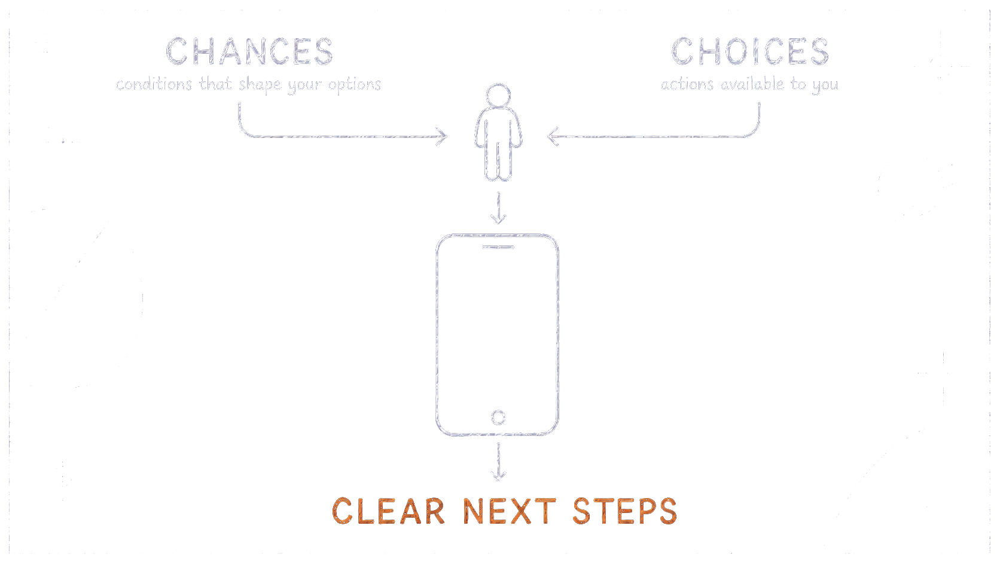

Without contextGeneric guidance
How context becomes a different answer.

1 · Shape the context
What is this person navigating?
2 · Ask one question
Watch the answer adapt.
With their contextStable
What may be shaping this
Why this changed